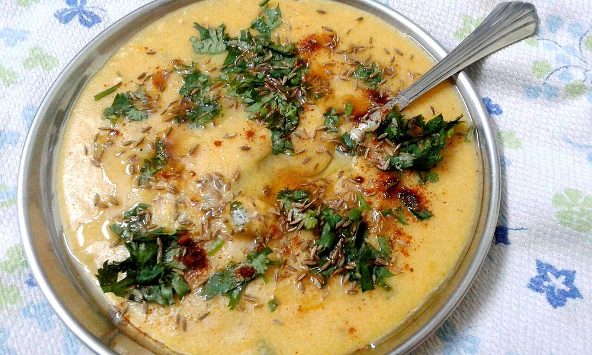

Khichu
scalded rice-flour dough spiked with green chilli and cumin, eaten hot with a pool of oil

Contains: sesame
Ingredients
Quantities for 4.
- 200g Rice Flourfine rice flour, not the coarse idli variety
- 500ml Water
- 3, very finely chopped Green Chilli
- 1 tsp Cumin Seeds
- 1/4 tsp Asafoetidause compounded-free hing to keep this gluten-free
- 1/4 tsp Baking Sodastands in for papad khar; gives the springy chewoptional
- 1.25 tsp Salt
- 4 tbsp, to pour over at the table Neutral Oil
- 1 tsp Sesameoptional
- 1/2 tsp, to dust Chilli Powderoptional
Cookware
stovetop
Checked against the ingredient list for ten allergens: milk, egg, fish, crustaceans, tree nuts, peanuts, sesame, mustard, soy and gluten. Brands vary, so read the label on anything new to you.
Before you start
- Measure the flour before you boil the water. The flour goes in all at once and there is no time to weigh mid-way.
- Use a heavy pan. Khichu catches and scorches in a thin one within seconds.
- Khichu is eaten straight from the pan while it steams. Have everyone at the table before you start.
Method
- Bring the water, salt, cumin seeds, chopped green chilli, asafoetida and baking soda to a rolling boil in a heavy pan.Taste the water now. It should be a shade saltier than you want the finished khichu.
- Turn the heat to low and tip in all the rice flour at once. Do not stir yet.
- Cover and leave 2 minutes so the flour steams through.
- Now beat hard with a wooden spoon until it comes together into a single lump with no dry pockets, about 2 minutes.Keep it on the heat while you beat. Off the heat it goes gluey.
- Cover again and steam on the lowest heat for 6-8 minutes, stirring once, until the dough looks glossy and pulls away from the sides.
- Wet your palm with cold water and knead the hot dough in the pan for a minute until smooth and elastic.Wet hands, not oiled. Water is what keeps it from sticking and lets you work it hot.
- Pinch off portions, shape into rough rounds and press a dimple into each with your thumb.
- Pour a spoonful of oil into every dimple, dust with chilli powder and sesame, and eat immediately with the oil running.
Storage
Khichu does not keep well as a soft dough. Refrigerate leftovers up to 2 days, then roll thin, dry in the sun and fry as papad. Which is what the dough was invented for.
Nutrition Good estimate
Low protein: 4 g a serving, 4% of the calories
| Per serving197 g | Per 100 g | |
|---|---|---|
| Calories | 318 kcal | 162 kcal |
| Protein | 3.5 g | 2 g |
| Carbohydrate | 41.5 g | 21 g |
| of which sugars | 0.3 g | 0 g |
| Fibre | 1.6 g | 1 g |
| Fat | 15.3 g | 8 g |
| of which saturated | 1.7 g | 1 g |
| of which unsaturated | 12.8 g | 6 g |
Nearest database match used for asafoetida. Estimated from raw ingredients using USDA FoodData Central.
More like this: Quick Indian recipes (30 min) · Vegan Indian recipes · Vegetarian Indian recipes · Gluten-free Indian recipes · Dairy-free Indian recipes · Gujarati recipes
Times, yields, allergens and nutrition are guidance. Use your own judgement on doneness and on storing. More in About.